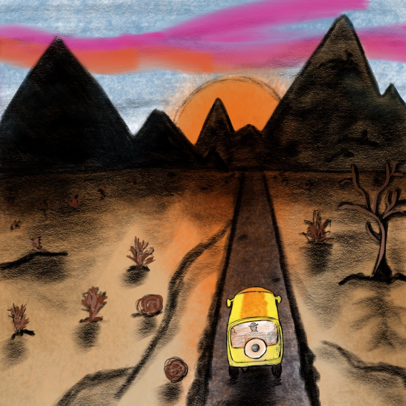

Creacover 2019 : J1
Publié le 14/01/2019 dans Dessin.
Une fois n’est pas coutume, avec les accolytes habituels, nous sommes repartis dans un défi de dessins en musique. Initialement nommé Inkcover, ce défi a changé de nom pour devenir Creacover, au cas où certaines créations ne seraient pas des dessins. Certains disent que ce nom est nul…
Pour ce premier jour, nous nous sommes inspirés de Planet Caravan de Black Sabbath.
La musique m’a bien plu. Elle dégage une ambiance hippie et chaleureuse que j’ai retranscrite avec un mini van et des couleurs chaudes.
Je travaille de nouveau les dessins numériques. Attention les yeux !
